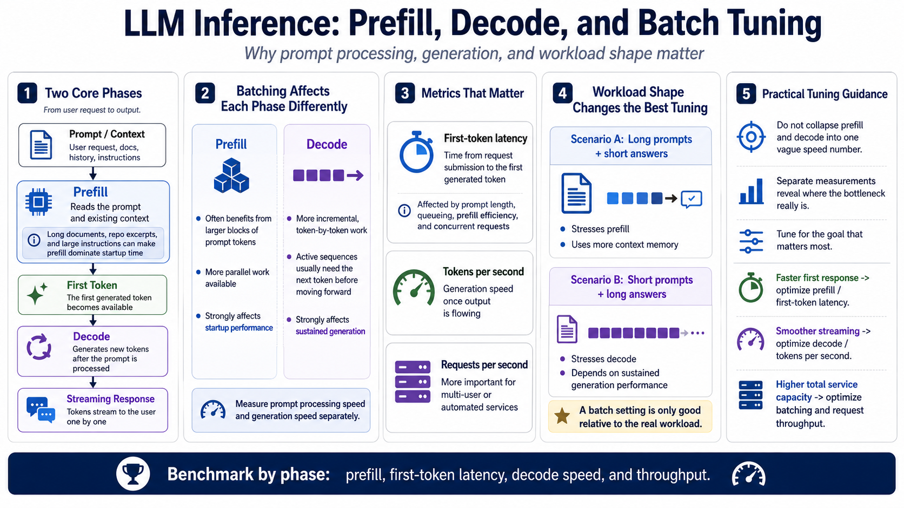

Prefill, Decode, and Where Batching Helps
Connecting to LMS... Progress: in progress

Narration
Most LLM inference can be understood as two related phases: prefill and decode. Prefill is the work of reading the prompt and existing context. If the user sends a long document, a repository excerpt, or a large instruction block, prefill can dominate the time before the model starts speaking. Decode is the phase that produces new tokens after the prompt has been processed.
Batching often helps these phases in different ways. During prefill, the runtime may be able to process larger blocks of prompt tokens efficiently because there is a lot of parallel work available. During decode, each active sequence usually needs the next token before it can move forward, so the shape of the work is more incremental. That is why prompt processing speed and generation speed should be measured separately.
First-token latency is the time between submitting the request and seeing the first generated token. It is strongly affected by prompt length, queueing, prefill efficiency, and how many other requests are active. Tokens per second measures generation speed once the model is producing output. Requests per second matters more for services that handle many users or automated clients.
A workload made of long prompts and short answers behaves differently from a workload made of short prompts and long answers. Long prompts stress prefill and context memory. Long responses stress decode and sustained generation. Good tuning begins by naming the workload clearly, because a batch configuration is only good relative to the kind of requests the system actually needs to serve.
When reviewing benchmark output, avoid collapsing prefill and decode into one vague speed number. A configuration can be excellent at absorbing a long prompt but ordinary during generation, or the other way around. Separate measurements help you decide whether to tune for faster first response, smoother streaming, or better total capacity under repeated requests.